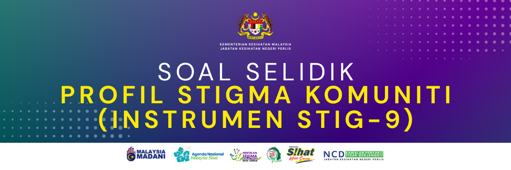

Sila isi maklumat latar belakang anda sebelum memulakan soalan.
Terima kasih atas masa anda menjawab soal selidik ini. Kerjasama anda amat dihargai dalam membantu menjayakan Kempen Hentikan Stigma Kesihatan Mental.